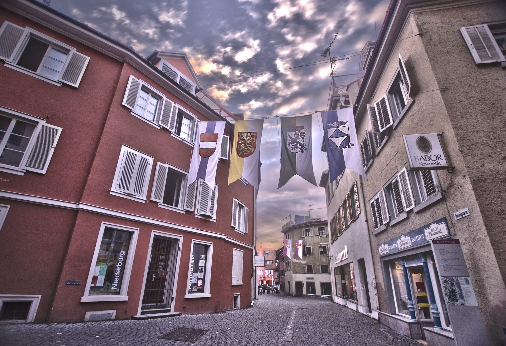

Eine ehemalige Textilmanufaktur
Großzügige, lichtdurchflutete Hallen im Konstanzer Stromeyersdorf – Werkraum, Ausstellungsfläche und Begegnungsort zugleich.
Von der Textilmanufaktur zum Kunstort
Das Atelier Hendricks befindet sich in den ehemaligen Räumen der Textilmanufaktur Stromeyer im Konstanzer Stromeyersdorf. Die hohen Fenster, die weiten Deckenhöhen und die unverstellte Industriearchitektur prägen bis heute die Atmosphäre des Ateliers und bilden den Hintergrund, vor dem Malerei und Fotografie entstehen und gezeigt werden.
Werkraum und Ausstellungsfläche in einem
Im Atelier treffen Werkstatt und Präsentation direkt aufeinander: Wechselnde Ausstellungen mit Malerei, Fotografie, Skulptur und Schmuck werden hier in unmittelbarer Nähe zu den Arbeitsplätzen von Susanne und Rainer Hendricks gezeigt.
Vernetzt im Kunstquartier
Das Atelier Hendricks ist Teil eines Netzwerks weiterer Kunstschaffender und Ateliers im Stromeyersdorf-Quartier und beteiligt sich an gemeinsamen Formaten wie Open Art Stromeyersdorf.
Zu den Ausstellungen
Das Atelier vor Ort erleben
Zu den Öffnungszeiten oder nach persönlicher Anmeldung sind Sie im Atelier Hendricks willkommen.
Besuch anfragen